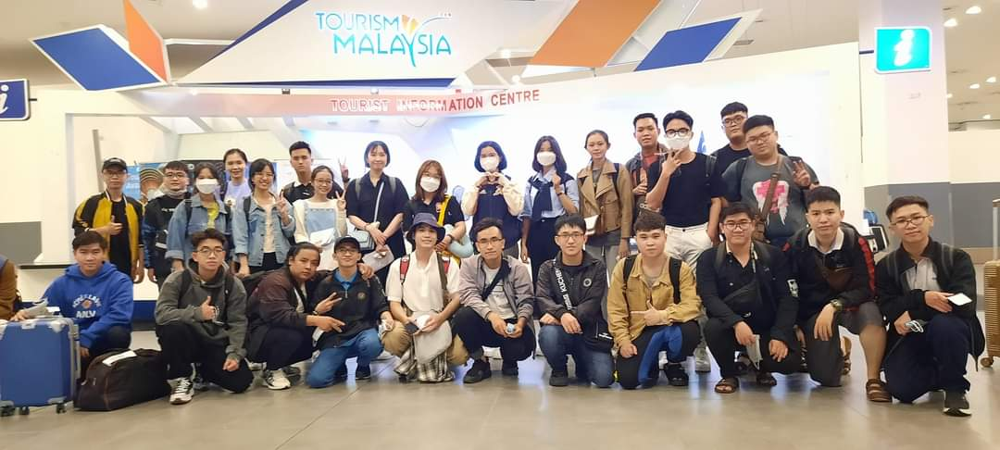
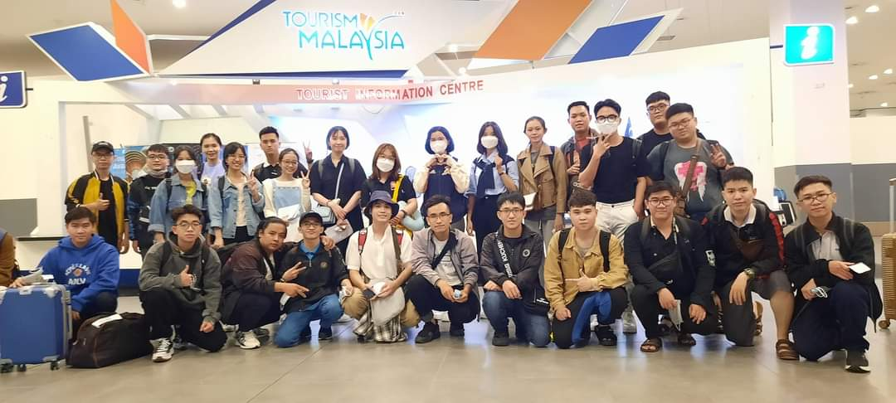

Khoa Mạng máy tính và Truyền thông
Khoa Mạng máy tính và Truyền thông
Giới thiệu
Được thành lập năm 1998 với tên gọi là Bộ môn Hệ thống máy tính và Truyền thông. Năm 2009, Khoa được đổi tên thành Bộ môn Mạng máy tính và Truyền thông. Ngày 29/09/2022, Bộ môn MMT & TT chuyển thành Khoa MMT & TT theo nghị quyết của Hội đồng Trường trường ĐHCT.
Với lực lượng cán bộ có trình độ cao (gồm 01 PGS, 06 Tiến sĩ, 11 Thạc sĩ), phần lớn đều tốt nghiệp ở các nước có nền giáo dục tiên tiến, Khoa MMT & TT đã và đang đảm nhiệm đào tạo 2 ngành bậc đại học trong lĩnh vực MMT & TT. Giảng viên của Khoa cũng đã hỗ trợ giảng dạy, thẩm định, đánh giá các chương trình đào tạo, hướng dẫn học viên thạc sĩ, NCS cho các trường đại học khác trên địa bàn và các tỉnh trong khu vực.
Khoa MMT & TT phụ trách đào tạo 2 chuyên ngành:
Khoa tham gia tích cực vào hoạt động nghiên cứu khoa học, thu hút thành công các nguồn tài trợ nghiên cứu quan trọng cả trong và ngoài trường. Giảng viên của khoa đã có kinh nghiệm chủ trì, tham gia, tư vấn, thực hiện chính, hoặc phản biện, cho nhiều đề tài các cấp từ cấp cơ sở, cấp thành phố đến cấp Nhà nước, trong đó nhiều đề tài đã được ứng dụng vào thực tiễn. Giảng viên và sinh viên của Khoa cũng đóng góp cho nghiên cứu khoa học thông qua việc xuất bản rộng rãi các sách, chương sách, cũng như trong các bài báo/báo cáo khoa học đã được công bố trong các tạp chí, hội nghị uy tín thuộc danh mục ISI/Scopus và danh mục bài báo tính điểm công trình của HĐCDGSNN.
Giảng viên tham gia nghiên cứu khoa học
Khoa luôn chú trọng công tác đào tạo và phát triển đội ngũ kế thừa, nhiều giảng viên của khoa đã được học bổng để tiếp tục học tập nâng cao trình độ tại các quốc gia mạnh về lĩnh vực máy tính và công nghệ thông tin. Các giảng viên thường xuyên tham gia các hội thảo, khóa đào tạo ngắn hạn về chuyên môn trong và ngoài nước để cập nhật kiến thức cũng như công nghệ mới phục vụ đào tạo và nghiên cứu khoa học.
Đội ngũ giảng viên của Khoa tận tâm và giàu kinh nghiệm truyền đạt kiến thức và kỹ năng trong lĩnh vực Mạng máy tính và Truyền thông, đồng thời trang bị cho sinh viên những giá trị tốt và tính chuyên nghiệp để phục vụ cộng đồng.
 
